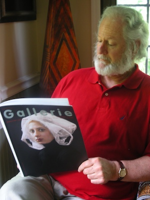

Jester-Knight
Literature
Film
Music
Visual Art
Tributes
Submissions
Links
Contact
Alan Britt

Biography
In August 2015 Alan Britt was invited by the Ecuadorian House of Culture Benjamín Carrión in Quito, Ecuador as part of the first cultural exchange of poets between Ecuador and the United States. In 2013 he served as judge for the The Bitter Oleander Press Library of Poetry Book Award. His interview at The Library of Congress for The Poet and the Poem aired on Pacifica Radio, January 2013. He has published 15 books of poetry, his latest being Violin Smoke (Translated into Hungarian by Paul Sohar and published in Romania: 2015). He teaches English/Creative Writing at Towson University.
ALAN BRITT: Library of Congress Interview (.mp3)
Email: alanbritt@comcast.net
Click below for Alan's work
Poems 2 (.pdf) NEW!!!
Poems (.pdf)